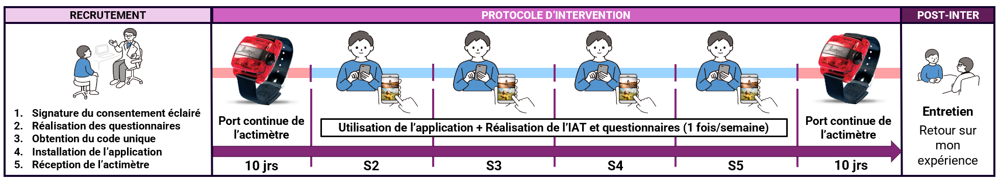

Cette note est destinée à vous donner des éléments d’information sur cette recherche. Si vous ne comprenez pas bien certains mots ou éléments de cette note, n’hésitez pas à demander des explications au chercheur. Vous êtes totalement libre d’accepter ou de refuser de participer à cette recherche. Le chercheur vous laissera le temps nécessaire pour prendre votre décision.
Merci pour l’intérêt exprimé à propos de cette étude de recherche. La signature du formulaire de consentement attestera de votre accord final pour participer à cette recherche.
L'objectif de cette fiche d'information est de vous fournir un aperçu de l'étude à laquelle vous souhaitez participer volontairement en tant que sujet. Merci de lire les informations suivantes attentivement et n'hésitez pas à demander de plus amples explications, si vous avez encore des questions, des doutes ou d'autres demandes. La signature du formulaire de consentement attestera de votre accord final pour participer à cette recherche.
Étude pilote portant sur la faisabilité, l’acceptabilité et l’optimisation d’une application de conditionnement évaluatif sur smartphone.
L’objectif de cette étude est d’évaluer la faisabilité et l’acceptabilité d’une application mobile de conditionnement évaluatif destinée à encourager la pratique d’activité physique.
Nous mesurerons notamment :
Avant de pouvoir participer pleinement à l’étude, vous devrez compléter un court questionnaire de pré-inclusion en ligne (durée estimée : 3 à 5 minutes). Ce questionnaire nous permettra de récupérer vos données démographiques et vérifier que :
Si vous remplissez ces critères, un code utilisateur personnel et anonyme vous sera attribué (ex : 9e461812). GARDEZ-LE PRÉCIEUSEMENT. Ce code vous permettra :

Le capteur doit être porté à la hanche pendant la période de mesure, sauf pour se laver ou dormir. L’application fonctionne automatiquement en arrière-plan et affichera des images à chaque déverrouillage du téléphone. Signalez tout bug dès son apparition.
Vous ne pouvez pas vous attendre à tirer un bénéfice direct, si ce n’est votre contribution à l’avancée des connaissances scientifiques.
Cette recherche ne présente pas de risques plus grands que ceux de la vie quotidienne. L'utilisation de l'application ne présente pas de danger pour votre santé.
Pour exercer ces droits ou poser des questions, contactez le chercheur responsable ou le Délégué à la protection des données : dpo@umontpellier.fr. Les résultats globaux vous seront communiqués à la fin de l’étude.
Si vous avez des questions, n'hésitez pas à les poser ! Votre participation nous est extrêmement précieuse et nous vous remercions par avance pour votre contribution à la recherche scientifique.